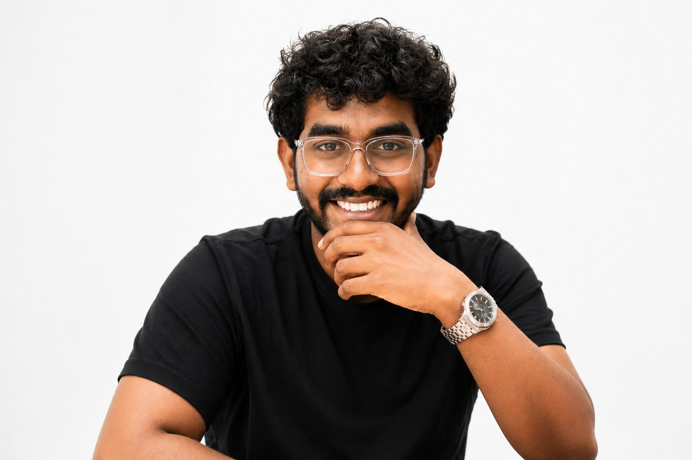

I design digital experiences — currently at Workfabric AI in Bengaluru, shaping brand identity, packaging and product interfaces across static and motion work.
Services
Branding, packaging, campaigns or a product interface — if there is a problem worth arguing about, I would like to hear it.